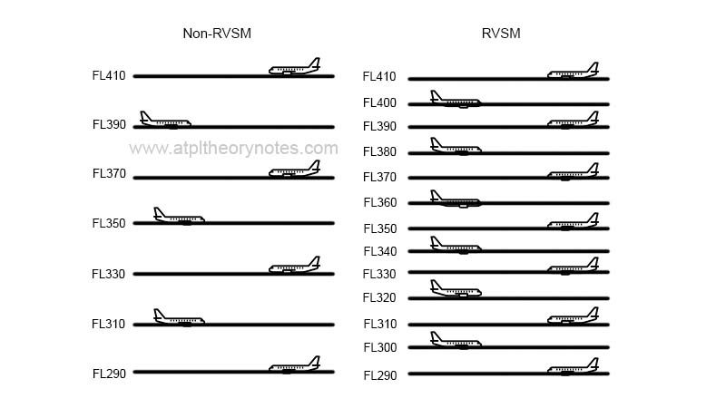

1. Introduction
· In order to receive an Air Operator Certificate, a new operator must produce an Operations Manual compliant with the authority regulations.
- It's the responsibility of the airline to produce the OPS Manual
- It's the responsibility of the authority to make sure that the OPS Manual complies with the regulations
- Operation manuals are structured as follows:
- Part A - General and basic information, common to all fleets in the airline (Organization, Flight Time Limitations, Crew Composition, etc)
- Part B - Type specific (Limitations, Performance, MEL, CDL, Aircraft Equipment, etc)
- Part C - Route, aerodromes
- Part D - Training
- A and B must be carried in flight
· Regulation (EU) 965/2012, which is a replacement for EU-OPS 1, is divided into 8 annexes:
- 1 - Definitions
- 2 - Part ARO. Authority Requirements for Air Operations
- 3 - Part ORO. Organization Requirements for Air Operations
- 4 - Part CAT. Commercial Air Transport
- 5 - Part SPA. Specific Approvals
- 6 - Part NCC. Non-commercial air operations with complex motor-powered aircraft
- 7 - Part NCO. Non-commercial air operations with other-than complex motor-powered aircraft
- 8 - Part SPO. Specialized operations (banner towing, photography, etc)
Complex motored aircraft refers to an aeroplane:
- with a maximum certificated take-off mass exceeding 5700 kg, or
- certificated for a maximum passenger seating configuration of more than nineteen, or
- certificated for operation with a minimum crew of at least two pilots, or
- equipped with (a) turbojet engine(s) or more than one turboprop engine
2. ICAO Annex 6. Operational Procedures
· ICAO provides Standards and Recommended Practices (SARPs) to its member states, in the form of 19 annexes to the Chicago convention. However, recently, EASA has used those standard and recommended practices to form a basis for their European Union Operational legislation (EU-OPS)
DEFINITIONS
| Alternate aerodrome | An aerodrome to which an aircraft may proceed when it becomes impossible to land at the aerodrome of intended landing |
|---|---|
| Destination alternate | An alternate aerodrome to which an aircraft may proceed should it become impossible to land at the destination aerodrome |
| En-route alternate | An aerodrome at which an aircraft could land following an abnormal or emergency condition en-route |
| Take-off alternate | An aerodrome at which an aircraft could land if necessary shortly after take-off if it is not possible to return to the departure aerodrome |
| ETOPS en-route alternate | A suitable aerodrome at which an airplane would be able to land experiencing an engine shut down or any other abnormal emergency condition within the approved ETOPS max distance for that airplane type |
| Cabin crew member | A crew member who performs, in the interest of safety of passengers, duties assigned by the operator or the pilot-in-command of the aircraft, but who shall not act as a flight crew member |
| Flight crew member | A licensed crew member charged with duties essential to the operation of an aircraft during a flight duty period. |
| Commercial air transport operation | An aircraft operation involving the transport of passengers, cargo or mail for remuneration or hire. |
| Flight time (block time or chock to chock) | The total time from the moment an airplane first moves for the purpose of taking-off until the moment it finally stops at the end of the flight |
| Operating base | The location from which operational control is exercised. |
| Operational control | The exercise of authority over the initiation, continuation, diversion or termination of a flight in the interest of the safety of the aircraft and the regularity and efficiency of the flight |
| Operations manual | A manual containing procedures, instructions and guidance for use by operational personnel in the execution of their duties. |
| Operator | A person, organization or enterprise engaged in or offering to engage in an aircraft operation. |
| Safety management system | A systematic approach to managing safety, including the necessary organizational structures, accountabilities, policies and procedures. |
APPLICABILITY
· ICAO Annex 6 part 1 is applicable to international commercial air transport operations conducted by airplane.
- PIC has the final responsibility of complying with both, the rules of the Operator and the rules of the State where they are operating.
- Departure of the rules is only allowed if it's necessary in the interest of safety.
SAFETY MANAGEMENT
· A Safety Management System is a systematic approach to managing safety and controlling risks.
- The Safety Management Programme must identify threats, provide mitigations and continuously monitor the overall level of safety.
- The system includes the necessary organizational structures, accountabilities, policies and procedures.
- They are periodically audited
- ICAO recommends that airlines operating aircraft of more than 20.000 kg MTOW should establish a flight data analysis program as part of their SMS
- It becomes mandatory if aeroplanes greater than 27.000 kg MTOW are operated
· Safety Manager
- Manager should facilitate hazard identification
- Manager should provide periodic reports on safety performance
- The safety manager and a safety review board are responsible for flight safety
· Safety Review Board
- The board should be chaired by the accountable manager and be composed of heads of functional areas.
- The safety review board should ensure that appropriate resources are allocated to achieve the established safety performance.
- The purpose of the safety management board is to allocate resources
· Safety Action Group
- The SAG reports to and takes strategic direction from the Safety Review Board.
- It comprises managers, supervisors and staff from operational areas. The Safety Manager may also be included in the SAG
· Note that the safety management manual is not the same as the ops manual
MAINTENANCE RELEASE
· Maintenance release
- Airplanes being released from maintenance are issued and signed to certify the performed work.
- It's the responsibility of the PIC to check the documentation to confirm the airworthiness of the aircraft, before accepting it for operation.
· The maintenance release certificate contains:
- Basic details of the maintenance carried out (what)
- The date completed (when)
- The identity of the approved maintenance organization (where)
- The identity of the person signing the release (who)
3. EU-OPS Part 1, Subpart A
APPLICABILITY OF EU-OPS
· EU-OPS Part 1 applies to any Operator whose principal place of business is an EASA Member State, and who conducts Commercial Air Transport (CAT). However, it does not apply to:
- Airplanes used in military, police and exercise operations
- Parachute dropping and firefighting flights
- Flights used for aerial works as long as maximum 6 passengers (excluding crew) are on board
· When a Synthetic Training Device (STD) is used to replace training in a real airplane, such STDs must be approved by the authority.
4. EU-OPS Part 1, Subpart B - Operator's Responsibilities
DEFINITIONS
| Master minimum equipment list (MMEL) | A list established established by the aircraft designer which identifies items or systems which may be unserviceable at the commencement of a flight. The MMEL may be associated with special operating conditions, limitations or procedures. |
|---|---|
| Minimum equipment list (MEL) | A minimum equipment list (MEL) is a list established by the operator in conformity with, or more restrictive than, the MMEL, which provides for the operation of aircraft, subject to specified conditions, with particular equipment inoperative. |
| Configuration deviation list (CDL) | Similar to MEL, but relating to outside of aircraft (e.g, structural parts) |
| Maximum operational passenger seating configuration (MOPSC) | The maximum passenger seating capacity of an individual aircraft, excluding crew seats, established for operational purposes and specified in the operations manual. |
· Note
- MEL is used on the ground before an aircraft starts moving by its own power with the intention of taking off. Once you start moving, refer to normal / abnormal checklist or procedures.
- MEL is prepared by the Operator using the MMEL as a source, and it must be, at least, as restrictive as the MMEL
· Operator complexity: If 21 or more employees, operator is considered to be complex.
COMMON LANGUAGE
- Operators are responsible for ensuring that all crew members are able to communicate in a common language
- Used by crew for briefings, flight and debriefings
- If the common language isn't English, the OPS Manual must have a copy in English
QUALITY SYSTEM
· Quality system
- Aircraft operators must establish a quality system and designate a Quality Manager whose function is to monitor compliance with, and the adequacy of, procedures required to ensure safe operational practices and airworthiness of aircraft.
- Larger airlines may split responsibilities into two Quality Managers (too much work for just one). In such cases, there must be:
- An Operations Manager
- A Maintenance Manager
- The system and managers must be acceptable to the Authority
- Internal auditing must be performed to verify that the operations are being conducted in accordance with the requirements and procedures.
· Flight safety program
- Operators must establish an Accident Prevention and Flight Safety Program
- The program must include:
- Risk awareness
- An occurrence reporting scheme
- A flight data monitoring program for aeroplanes of more than 27.000 kg MTOM
CREW MEMBERS
· Definitions
- Crew member: Personnel assigned with operational and safety related duties during flight time (flight and cabin crew essentially)
- Additional crew: not assigned ops/safety duties (example, bar waiter)
· Crew members must report faults or occurrences that may affect the safety of the aeroplane to the Commander.
- When an occurrence may affect safety of other flights, it must be reported to Air Traffic Services immediately
- Other occurrences should reported within 72 hours
CREW RESPONSIBILITIES
· Crews are responsible for discharging their duties according to the procedures established in the Operations Manual.
· Crews are responsible for reporting any occurrence or incidence that could affect or could have endangered the airworthiness or safety operation of the aircraft.
· Any crew member must not present him or herself for the flight:
- Under the influence of any drug that may influence his/her performance
- Until a reasonable period of time has elapsed after deep water diving
- Until a reasonable period of time has elapsed after donating blood
- If he or she is in any doubt as to his or her ability to accomplish the flight (including fatigue)
· A crew member must not:
- Consume alcohol less than 8 hours prior to reporting for duty
- Report for duty with a blood alcohol level exceeding 0.2 0.2 grams of blood alcohol concentration (BAC) per litre of blood
- Consume alcohol when in flight or in standby
COMMANDER RESPONSIBILITIES
· The commander shall:
- Be responsible for the safety of all crew members, passengers, cargo on board and the aircraft
- Have authority to give all commands and take any appropriate actions for the purpose of securing the safety of the aircraft and of persons and/or property carried on-board
- Have authority to disembark any person, or any part of the cargo, that may represent a potential hazard to the safety of the aircraft or its occupants
- Not allow a person to be carried in the aircraft who appears to be under the influence of alcohol or drugs to the extent that the safety of the aircraft or its occupants is likely to be endangered
- Have the right to refuse transportation of inadmissible passengers, deportees or persons in custody if their carriage increases the risk to the safety of the aircraft or its occupants
- Ensure that all passengers are briefed on the location of emergency exits and the location and use of relevant safety and emergency equipment
- Ensure that all operational procedures and checklists are complied with in accordance with the operations manual
- Not permit any crew member to perform any activity during critical phases of flight, except duties required for the safe operation of the aircraft
- Ensure that flight recorders are not disabled or switched off during flight, or intentionally erased
- Decide whether or not to accept an airplane with unserviceabilities allowed by MEL and CDL
ADMISSION TO THE FLIGHT DECK
· The only personnel allowed to enter the flight deck are:
- The Operating Crew
- A representative of the Authority performing his duty
- Persons admitted to do so according to the OM
· Note: The final decision concerning admittance to the flight deck rests with the Commander.
PORTABLE ELECTRONIC DEVICES (PEDs)
· Operators must take measures to prevent the usage of PEDs that could affect the performance of the airplane's systems and equipment.
PAPERWORK
· Documents required on board by EU-OPS:
- Certificate of registration
- Certificate or airworthiness
- Noise certificate
- Aircraft Operator's Certificate
- Aircraft radio license
- Third party insurance
- Flight crew licenses with appropiate ratings for the flight.
· Manuals and reference material required on board by EU-OPS:
- Parts A and B of the Operations Manual
- Aircraft Flight Manual or POH
- Airplane Technical Log
- Flight Plan
- NOTAMs, AIS and any other relevant documentation
- Meteorological reports
- Mass and balance
- Notification of special categories of passengers, special loads or dangerous goods
- Maps and charts
· Documents with copies left on the ground:
- Mass and balance
- Operational flight plan
- Notams
- Special loads notification
- Technical log
- Tip: use the MONST acronym
· Inspections
- Authority can inspect airlines paperwork, following notice, within a reasonable time
- Authority may inspect aircraft or in-flight operations. Commanders must allow access unless it has a negative impact on safety
- Where accident/incident has occurred, FDR must be kept for 60 days by operator
OPERATIONS LIMITATIONS
· Ditching
- If MOPSC > 30 and operating >120 mins or > 400nm, aeroplane must conform to ditching standards
LEASING
· Definitions
- Dry lease. Doesn't include crew, and airplane is operated under the AOC of the lessee
- Wet lease. Includes crew and operated under the AOC of the lessor
· Wet leases
- If the wet lease is from another EASA state, the authority must approve the lease. The certificates issued by any Member State should be recognized by all States, so the Authority must apply the same requirements regardless of which state issued the lessor's AOC.
- If an operator proposes to wet lease-in an aircraft from a 'third country operator' (this means an operator from a non-EASA State), then the lessee must demonstrate that the lessor will operate to EU safety standards. The authority will also verify that the lessor has a valid AOC and it's not blacklisted by EU.
· Dry leases
- In case of a dry lease-in, the aircraft will be operated under the lessee's AOC, so the operational standards are equivalent to those required for any other EU operation. Now, the biggest concern is if the aircraft meets the airworthiness requirements and carries the necessary equipment. For this reason, Operators must notify the authority of any differences to the requirements of EU-OPS with regard to instrumentation and communication differences.
- If an aircraft is being dry leased-in from a 'third country', then the Authority must make sure that the aircraft is not blacklisted. Here, the lessee has to demonstrate a few things:
- An operational need has been identified and can't be satisfied through European-registered aircraft
- The duration of the lease-in doesn't exceed 7 months in any 12 month consecutive period
5. EU-OPS Part 1, Subpart C - Operator Certification and Supervision
CERTIFICATION OF OPERATORS
· Commercial Air Transportation can only be performed by approved Air Operators.
- An Air Operator Certificate (AOC) is issued by the authority of the State where the Operator is based
- This AOC makes the company a registered airline.
REQUIREMENTS FOR OBTAINING AN AIR OPERATOR CERTIFICATE
· Operators applying for an AOC must comply with given requirements:
- Operators must not already hold another State's AOC, unless specifically approved
- Organization must be professionally financially managed
- Organization and management are suitable for scale and scope
- Operator must nominate holders responsible for the management of the following areas:
- Flight operations
- Maintenance system
- Crew training
- Ground operations
- If the Operator is small, one of those posts may be covered by the accountable manager
- If the Operator has 21 or more staff, minimum 2 people to cover the 4 posts
- Demonstration flights may be required
- Safety requirements must be fully satisfied
- Operator must ensure that airplanes are airworthy and will continue to be airworthy through a maintenance programme in accordance with the manufacturers of their aircraft.
VARIATION, REVOCATION OR SUSPENSION OF AN AOC
· Authorities regularly audit the operation of airlines and their financial records.
- If airlines don't comply with the conditions of issue of the AOC, or if limitations imposed by this AOC are violated, airlines can have their AOC revised, revoked or even suspended.
CONTENT OF AN AIR OPERATOR CERTIFICATE
· An Air Operator Certificate may include limitations or specific approvals, such as:
- Approval for Low Visibility Operations, including weather minima for each type of aircraft
- Approval for PBN operations
- Approval for Dangerous Goods transportation
- ETOPS approval
- Operations in MNPS airspace
- Operations in RVSM airspace
- Any limitations specific to the Operator.
Sample AOC (source: www.yumpu.com)
6. EU-OPS Part 1, Subpart D - Operational Procedures
INTRODUCTION
| Adequate aerodrome | An aerodrome that the Operator considers satisfactory, taking account of the applicable performance requirements and runway characteristics; at the expected time of use, the aerodrome will be available and equipped with necessary ancillary services such as ATS, sufficient lighting, communications, weather reporting, navaids and emergency services. |
|---|---|
| Suitable aerodrome | An adequate aerodromes which also happen to be weather permitting and open at the ETA. |
| ETOPS | Extended Twin Engine Operations. Allows two engine aeroplanes to operate further from a suitable aerodrome if they demonstrate enough reliability. |
| Isolated aerodrome | An aerodrome is considered isolated if the fuel required (alternate + final reserve) to the nearest adequate alternate is:
|
| Equivalent position | A position obtained from radioaids located between 3-5 nm from a threshold |
| Separate runways | Runways that are separated landing surfaces. These may overlay or cross, but, in such a way that if one gets blocked, the other one can remain operating as planned. |
| Approved one engine inoperative cruise speeds for ETOPS | A speed selected by the operator and approved by regulatory authority, at which one engine flight must be maintained in order to arrive at your ETOPS destination within the approved ETOPS time range. |
OPERATORS RESPONSIBILITIES
· During critical phases of flight, crew must be performing duties only related to safety / operations.
NOISE ABATEMENT
· Noise abatement procedures
|
RVSM
| · Nowadays, altimeters are accurate enough to allow for a reduced vertical separation. This is called Reduced Vertical Separation Minima (RVSM):
· Operating in RVSM airspace requires:
· To obtain RVSM approval, operators must provide evidence that:
|  |
MAXIMUM DISTANCE FROM ADEQUATE AERODROMES
· Threshold distance for non-ETOPS aircraft (standard):
- Performance Class A (Large) must remain within 60 minutes at OEI speed from an adequate aerodrome
- This involves Class A aircraft with:
- MOPSC >= 20
- MTOM > 45.360 kg
- This involves Class A aircraft with:
- Performance Class A (Small) must remain within 120 minutes at OEI speed (it can be increased to 180 minutes for turbojets) from an adequate aerodrome
- This involves Class A aircraft with:
- MOPS <= 19
- MTOM < 45.360 kg
- This involves Class A aircraft with:
- Performance classes B and C
- Within distance flown in 120 minutes or 300 nm (the lesser)
· Threshold distance for ETOPS aircraft:
- ETOPS allows operators to fly at a distance bigger than specified above
- However, the distance must always be kept within the Operator's approved ETOPS time and the diversion time based on the MEL
MINIMUM FLIGHT ALTITUDES
· Minimum flight altitude
- Operators are responsible for establishing and determining altitude minima
- Methods used to obtain this must be approved by state
- Operators must also provide a method for the flight crew to determine those altitudes.
FUEL POLICIES AND REQUIREMENTS
· Fuel policy
- Operator must establish fuel policies derived from manufacturer data or fuel consumption monitoring system
- Flight must be planned to land at destination with alternate and final reserve fuel intact
· Commander duties during flight
- Compare actual consumption with planned
- Check if remaining fuel is enough to complete flight
- Determine expected usable fuel remaining on destination
PASSENGERS
· Special categories of passengers
- Persons requiring special conditions, assistance and/or devices when carried on a flight shall be considered as SCPs including at least:
- Passengers of reduced mobility (PRM)
- Infants and unaccompanied children, up to the age of 12
- Inadmissible passengers, deportees and persons in custody
- They must not be allocated in seats that permit direct access to emergency exits or where their presence could:
- Impede crew members in their duties;
- Obstruct access to emergency equipment
- Impede the emergency evacuation of the aircraft.
- The commander shall be notified in advance when SCPs are to be carried on board
· Passengers of reduced mobility (PRM)
- Types:
- Wheelchair Roll - able to walk short distances
- Wheelchair Steps - need to be taken up stairs, can get to seat
- Wheelchair Cabin - need help into seat by specialized crew
FLIGHT PLANNING - SELECTION OF AERODROMES
· Take-off alternate selection
- A take-off alternate must be selected when, following an incident, the aircraft wouldn't be able to return to the departure aerodrome.
- The alternate must be selected according to the number of engines and the distance:
- 2 engine aircraft (non ETOPS) - must be within 60 minutes distance at OEI speed
- 2 engine aircraft (ETOPS) - must be within 120 minutes (or ETOPS distance if less) at OEI speed
- 3 or more engine aircraft - must be within 120 minutes at OEI speed
Note: If an aircraft doesn't have a OEI cruise speed, use the speed achieved with the remaining engines at max continuous power.
· Destination alternates
- Each IFR flight must have at least ONE destination alternate unless:
- A)
- < 6 hours planned flight
- Airport with 2 separate runways available
- Weather forecast 1 hr either side of ETA as follows:
- Ceiling above 2000 ft or circling height +500 ft (whichever is higher)
- Visibility more than 5 km
- B) Isolated aerodrome
- A)
- Each IFR flight must have at least TWO destination alternates when:
- Weather forecast at the destination 1 hour either side of ETA is below planning minima
- No weather information is available
- After dispatch, go onto actual minimas instead of planning minimas
FLIGHT PLANNING - IFR MINIMAS
· Types of instrument approaches
- Type "A" instrument approaches: MDH or DH at or above 250 ft
- Type "B" instrument approaches: MDH or DH below 250 ft
· Planning minimas:
- Planning is always on increased minima for safety
- IFR flights:
- An aerodrome can only be selected as a destination or alternate if forecasts indicate that 1 hour either side of ETA the weather conditions will be at or above the applicable landing minima.
- Take-off alternate
- A take-off alternate must be selected when, following an incident, the aircraft wouldn't be able to return to the departure aerodrome.
- The ceiling must be taken into account when the available approaches are non-precision or circling.
- Destination aerodrome
- Can only select destination when RVR or visibility (and applicable ceiling for non-precision approaches or circling) is met one hour either side of ETA or 2 alternates are selected.
- Destination alternate, en-route alternates, isolated aerodromes:
| TYPE OF APPROACH | PLANNING MINIMA BASED ON |
|---|---|
| Type B instrument approach | DA/H + 200 ft RVR/VIS + 800 m |
| Type A instrument approach | DA/H or MDA/H + 400 ft RVR/VIS + 1500 m |
| Circling approach operations | MDA/H + 400 ft VIS + 1500 ft |
REFUELING
· Passengers are not allowed to enter or leave the aircraft while refueling AVGAS or JET B due to flammability associated with these types of fuel.
· Regarding JET-A1, passengers can be boarding while refueling ONLY if operator has procedures established and:
- Fasten seat belt sign is off and passengers are verbally instructed to unfasten seat belts
- No smoking sign on
- Interior emergency lights are on
- A qualified person which whom two way communication must be established is present
· If smoke or fuel vapour is detected inside the cabin, stop refueling immediately
CREW MEMBER & POSITIONS
· During take-off and landing:
- Each flight crew member:
- must be at their positions seated
- must fasten all harnesses and belts
- Cabin crew must be seated at their stations
· Flight crew fatigue
- If fatigue is detected, PIC may authorize a controlled rest period.
SEATS
· Passengers must remain at their seats with the belts fastened during taxi, take-off and landing, and other periods as determined by the Commander.
· Children less than 2 years old don't need to have their own seat provided that they are properly secured via a belt.
METEOROLOGICAL CONDITIONS
· During IFR flights, pilots shall only commence takeoff when expected weather conditions at ETA are at / above planning minima at destination and alternate
· For VFR, flights should only be commenced if forecasts indicate that VMC will be maintainable throughout the whole flight.
· Icing
- Take-off is prohibited unless the external aircraft surfaces are clear of any deposit that would degrade the aircraft performance
- Don't fly into icing or take-off if airframe is contaminated with ice unless the airplane is certified and equipped to overcome icing threats.
FUEL
· Before take-off, fuel and oil quantities must be checked
· During flight, checks must be done to ensure than fuel at the arrival will be no less than:
- If still going to the destination: required alternate fuel + final reserve fuel
- If already diverting: final reserve fuel (if you expect to arrive at the alternate with less than the final reserve, declare an emergency)
- Remember that <30 mins of fuel on commercial aircraft puts lives at risk
SUPPLEMENTAL OXYGEN
· Flight crew must use supplemental oxygen whenever the cabin altitude exceeds:
- 10.000 ft for more than 30 mins
- 13.000 ft for any duration
Note that flight crew are allowed to fly between 10.000 and 13.000 ft without supplemental oxygen for a maximum of 30 minutes.
THREATS
· Terrain
- If a Ground Proximity Warning System produces an alert, corrective action must be taken immediately
· Airborne Collisions
- ACAS can produce Traffic Advisories (TA), aimed at warning of the presence of other aircraft, and Resolution Advisories (RA), which provide instructions to avoid a collision
- If a Resolution Advisory is received, pilots should take corrective action immediately and always follow TCAS, even if it's in conflict with ATC instructions.
APPROACH AND LANDING
· Aerodrome conditions
- Before commencing the approach, commander must ensure weather at the runway doesn't impede a safe approach, landing or missed approach
· Continuation of approach (approach ban)
- Approaches can be commenced anytime regardless of the reported RVR, but it can only continue below 1000 ft if RVR/VIS is above landing minima.
- Surprisingly, if weather deteriorates below minima once the aircraft is below 1000 ft, the approach CAN be continued
· RVR is not always reported. In such cases, visibility can be converted to RVR by applying the following factors:
| Aerodrome fitted with | DAY | NIGHT |
|---|---|---|
| High Intensity Lighting | 1.5 | 2.0 |
| Lighting | 1.0 | 1.5 |
| No lighting | 1.0 | NA |
· We call the resulting value "Converted Meteorological Visibility"
· This means that if an aerodrome reports a visibility of 2000 metres at night, and it's fitted with High Intensity Lighting, we can assume CMV to be 4000 m
OCCURRENCE REPORTING
· Occurrence reporting
- In general, occurrences must be reported immediately or within 72 hours, depending on whether it's likely to affect other aircraft or not
· Accidents and serious incidents
- Accidents and serious incidents must be reported to authority
- If an accident occurs, it must be reported to the Authority of Operator before the airplane is moved
· If an aircraft receives an ACAS RA, the PIC must notify ATS and submit an ACAS report to the authority.
· Bird strike
- Notify local ATC immediately if a potential bird hazard is observed
- If significant damage to AC, written bird strike report must be submitted to authority after landing
· Unlawful interference
- Report to local authority + authority in state of the operator ASAP
- Once resolved, local authority is responsible for safety and return
CLASSIFICATION OF AIRPLANES
· Airplanes are classified according to the Vat (which is the indicated speed at the threshold)
- Category A < 91 kt
- Category B 91 - 120 kt
- Category C 121 - 140 kt
- Category D 141 - 165 kt
- Category E 166 - 210 kt
7. EU-OPS Part 1, Subpart E - Low Visibility Operations and Operations with Operational Credits
DEFINITIONS
| Circling | Visual phase of instrument approach aimed at bringing the aircraft into the opposite threshold |
|---|---|
| Fail-operational | Following a failure below alert height, the aircraft will be completed automatically |
| Fail-passive | Following a failure below alert height, there's no significant deviation from flight path or attitude, but the pilot must land. |
| Low Visibility Procedures (LVP) | Low visibility conditions means meteorological conditions with a runway visual range (RVR) less than 550 m |
| Low Visibility Take-off (LVTO) | Take-off where RVR is between 75 and 550 m |
| Visual approach | Visual part of an instrument approach where approach is executed with visual reference to the terrain |
| Non-precision approach | Instrument approach with MDH (or DA if CDFA) not lower than 250ft and RVR / CMV not less than 750 m |
| Stabilized Approach | Approach flown in appropriate manner, on flight path and with proper speed from a pre-determined point down to 50 ft above threshold |
| Continuous Descent Final Approach (CDFA) | Technique for flying the final segment of a NPA as a continuous descent to 50 ft above threshold. Minimas for CDFAs are given in terms of DA! |
GENERAL RESTRICTIONS TO LOW VISIBILITY OPERATIONS
· Operators shall conduct the following operations only if they are approved by the competent authority:
- Take-off operations with visibility conditions of less than 400m RVR
- Instrument approach operations in low visibility conditions
- Operations with operational credits, except for EFVS 200 operations, which shall not be subject to a specific approval
Note: Take-off operations are classified as ‘normal take-off operations’ with an RVR at or above 550 m and ‘LVTO operations’ with an RVR below 550 m. Only LVTO operations in an RVR of less than 400 m require a specific approval.
LOW VISIBILITY TAKE-OFF (LVTO) IN AN RVR OF LESS THAN 400 M
· Required RVR vs facilities for aircraft continuing take-off should a critical engine failure occur
| Minimum RVR | Facilities |
|---|---|
| 300 m (day) | Centre line markings; and Runway edge lights |
| 300 m (night) | Centre line markings; and Runway edge lights; and Runway end lights or centre line lights |
| 150 m | Centre line markings; and Runway end lights; and Runway edge lights; and Runway centre line lights |
| 125 m | Centre line markings; and Runway end lights; and Runway edge lights (spaced 60 m or less); and Runway centre line lights (spaced 15 m or less) |
· LVTO operations with RVR below 125 m
- Runway must have centre line lights spaced at intervals of 15 m or less
- If an ILS Localizer is used for lateral guidance, ILS must meet requirements for CAT III operations and ILS sensitive area should be protected
- If a GLS is used for lateral guidance, GLS must meet requirements for CAT III operations
- RVR should never be less than 75 m
· Notes
- The reported RVR value representative of the initial part of the take-off run can be replaced by pilot assessment
- The minimum RVR value specified the table should be achieved for all reporting points representative of the parts of the runway from the point at which the aircraft commences the take-off until the calculated accelerate-stop distance from that point
· Visual segment for take-off
- The value of 125 m RVR for take-off with 15 m centre line light spacing has been selected because flight deck geometry means that this will provide at least a 90-m visual segment for the large majority of aircraft types. In a 90-m visual segment the pilot is expected to be able to see six centre line light intervals (seven centre line lights) at 15 m spacing once lined up on the runway centre line.
INSTRUMENT APPROACH OPERATIONS IN LOW VISIBILITY CONDITIONS - CAT II OPERATIONS
· For CAT II operations
- The DH should be determined by the use of a radio altimeter
- The DH can get to, as low, as 100 ft, unless a more restrictive DH is specified by the AFM, obstacles or crew qualification.
· CAT II operations minima. RVR vs DH
| Aircraft categories | Auto-coupled or HUD to below DH | ||
|---|---|---|---|
| A, B, C | D | ||
| DH | 100 - 120 ft | 300 | 350 (300 if conducting autoland or using HUDLS to touchdown) |
| 121 - 140 ft | 400 | 400 | |
| 141 -199 ft | 450 | 450 | |
INSTRUMENT APPROACH OPERATIONS IN LOW VISIBILITY CONDITIONS - CAT III OPERATIONS
· For CAT III operations
- The DH should be determined by the use of a radio altimeter
- The minimum DH is established by the AFM, obstacles or crew qualification.
- Operations with no DH can be conducted if allowed by AFM, approach aid and aerodrome facilities requirements are met and the flight crew is qualified.
· CAT III operations minima. RVR vs DH
| DH | Roll out control / guidance system | RVR |
|---|---|---|
| 50 - 99 ft | Not required | 175 m |
| 0 - 49 ft or NO DH | Fail-passive | 125 m |
| Fail-operational | 75 m |
EFFECT OF FAILURE OR DOWNGRADED EQUIPMENT IN CAT II / III OPERATIONS
· Should a failure of an equipment (or a combination of equipment) not specified in this table occur, CAT II/III operations wouldn't be authorized.
· Degradation below 1000 ft in approach
- If failure or degradation of ground equipment occurs below 1000 ft, pilots are not expected to consult this table. In this case, the approach could be continued at the pilot-in-command/commander’s discretion
REQUIRED VISUAL REFERENCES FOR CONTINUATION OF APPROACH BELOW DH
| APPROACH CATEGORY | REQUIRED VISUAL REFERENCES |
| CAT II and NPA | At least one of the following: (i) Elements of the approach light system; (ii) The threshold; (iii) The threshold markings; (iv) The threshold lights; (v) The threshold identification lights; (vi) The visual glide slope indicator; (vii) The touchdown zone or touchdown zone markings; (viii) The touchdown zone lights; (ix) Runway edge lights; or (x) Other visual references accepted by the Authority. |
| CAT II | At least 3 consecutive lights being the centre line of the approach lights, or touchdown zone lights, or runway centre line lights, or runway edge lights, or a combination of these. This visual reference must include a lateral element of the ground pattern, i.e. an approach lighting crossbar or the landing threshold or a barrette of the touchdown zone lighting. |
| CAT III with DH (fail passive) | At least three consecutive lights of the runway centre line lights |
| CAT III with DH (fail operational) | At least one centre line light |
| CAT III with no DH | Pilot is not required to see the runway prior to touchdown |
ESTABLISHMENT OF OPERATING MINIMA
· Each operator must establish operating minimas, taking into account crew, aircraft and navaid capacities, visual aids, equipment, obstacles, etc.
- Methods to establish minima must be acceptable to the authority
- Operator's minima can never be less than EU-OPS minima, unless specifically approved
FLIGHT CREW COMPETENCE
· Operator requirements
- Operator must ensure that flight crew is competent to conduct the intended operations
- Operator must ensure that each flight crew member successfully completes training for all types of LVO operations. Such training must include:
- Initial and recurrent training and checking
- Normal, abnormal and emergency procedures
- Be tailored to the type of technologies used in the intended operations
- Take into account the human factor risks associated with the intended operations
- Operators must keep records of the training and qualifications of the flight crew members
· Experience in type or class required for LVO
- Before commencing CAT II operations, the following guidance applies to PICs / commanders or pilots to whom the conduct of the flight may be delegated, who are new to the aircraft type
- 50 hours or 20 sectors on the type, including LIFUS, and
- 100 m should be added to the applicable CAT II RVR minima when the operation requires a CAT II manual landing to touchdown, until
- i) a total of 100 hours or 40 sectors has been achieved on the type
- ii) a total of 50 hours or 20 sectors has been achieved on the type, if the flight crew member has previously been qualified for CAT II manual operations
- Before commencing CAT III operations, the following guidance applies to PICs / commanders or pilots to whom the conduct of the flight may be delegated, who are new to the aircraft type
- 50 hours or 20 sectors on type, including LIFUS
- 100 m may be added to the applicable CAT II RVR minima when the operation requires a CAT II manual landing to touchdown, until a total of 100 hours or 40 sectors, including LIFUS, has been achieved on the type
· Flight crew training
- Achieved in two phases
- Phase one to become familiar with visual references required at DH, practice coordination with other crew members, understand the significance of alert height, and practice monitoring of autopilot.
- Phase two to understand the effect of aircraft unserviceabilities, limitations imposed by MEL, understand the effect of downgraded equipment and practice response to failures and abnormals.
- Minimum number of approaches during training
- For aircraft using a FSTD, a minimum of 6 approaches
- For aircraft for which no FSTDs are available, a minimum of 4 approaches in an equivalent sim followed by type-specific training on the aircraft
OTHER REQUIREMENTS FOR LOW VISIBILITY OPERATIONS
· Flight crew composition
- Crew must be formed by a minimum of 2 pilots certified to DH <200 ft or no DH at all
· A system to record success or failure of the approach and autoland is required.
· Requirements for LVO (departures)
ESTABLISHMENT OF LOW VISIBILITY PROCEDURES
· Low Visibility Procedures are established by operator, but activated by ATC
8. EU-OPS Part 1, Subpart K - Equipment
GENERAL
· A flight shouldn't commence unless the required equipment is approved, installed and operable for the kind of operation being conducted.
· The following equipment, even though may be required on board an aircraft, is not required to be certified by authority:
- Spare fuses
- Electric torches
- A time piece
- Chart holder
- First-aid kits
- Emergency medical kits
- Megaphones
- Survival and pyrotechnic equipment
- Child restraint devices
AIRCRAFT INSTRUMENTATION
· Aircraft instruments must be positioned so that they are visible from each crew member station.
SPARE ELECTRICAL FUSES
· If an aircraft is equipped with fuses, aircraft must carry at least the greatest of:
- a) 10% of the number of fuses of each rating
- b) 3 spare fuses for each rating
· Note: A circuit breaker is not a fuse.
AIRPLANE OPERATING LIGHTS
· For operation by day, airplanes must be equipped with:
- Anti-collision lights
- Lights to illuminate aircraft basic instruments
- Lights to illuminate passenger compartments
- An independent portable light for each crew member accessible by them when seated at their stations
· For operation by night, airplanes must be equipped with:
- Anti-collision lights
- Position / navigation lights
- Two landing lights or a single light with two separately energized filaments
WINDSHIELD WIPERS
· Aeroplanes with an MCTOM of more than 5 700 kg shall be equipped at each pilot station with a means to maintain a clear portion of the windshield during precipitation.
INSTRUMENTATION AND ASSOCIATED EQUIPMENT
· For VFR operation by day, the following instrumentation is required:
- A magnetic compass
- An accurate timepiece
- An OAT thermometer
- Basic instrument pack:
- Attitude indicator
- Airspeed indicator
- Altimeter
- Vertical Speed Indicator
- Turn and slip indicator
- Stabilized direction indicator
- A means of indicating when the supply of power to the required flight instruments is not adequate
· For night operations and IFR
- All the equipment specified above
- An additional sensitive pressure altimeter with an independent static source
- For propeller-powered aircraft of less than <5700 kg, a static source and an alternate source inside the cabin is allowed
- Aircraft of more than 5700 kg MCTOM or MOPSC > 9 must have an additional, standby, attitude indicator that must last 30 minutes upon power failure
· Single pilot IFR or single pilot night operation
- Airplane must have an autopilot with at least altitude hold and heading mode
ALTITUDE ALERTING SYSTEM
· Turboprops with a MCTOM > 5700 kg or MOPSC > 9 and ALL TURBOJETS must have an altitude alerting system capable of:
- Alerting the crew upon approaching a preselected altitude
- Alerting the crew when deviating from a preselected altitude
GROUND PROXIMITY WARNING SYSTEM AND TERRAIN AWARENESS SYSTEM
· All turbine powered aircraft with MCTOM > 5700 kg or MOPSC > 9 must have GPWS that includes TAWS
- GPWS is in charge of providing sink rate, ground proximity, altitude loss after take-off or go-around, incorrect landing configuration and downward glide slope deviation aural alerts
- TAWS must provide to the crew forward looking terrain awareness, and enough time to prevent CFIT
AIRBORNE COLLISION AVOIDANCE SYSTEM
· All turbine powered aircraft with MCTOM > 5700 kg or MOPSC > 19 must have ACAS II minimum
AIRBORNE WEATHER RADAR
· AWR is mandatory for:
- All pressurized airplanes
- Unpressurized aircraft of more than 5700 kg MCTOM
- Unpressurized aircraft with MOPS > 9 if operating in areas where thunderstorms are common
ICING
· Aircraft shouldn't be operated in icing conditions unless it is certificated and equipped to operate in such conditions.
· Aircraft shouldn't be operated in icing conditions at night unless it is equipped with means to illuminate or detect the formation of ice.
COSMIC RADIATION
· Aircraft flying above 49000 ft must have a Dosimeter measuring the rate of total cosmic radiation being received
INTERCOM SYSTEMS
· Flight crew interphone system
- Required on multi-pilot aircraft
· Crew member interphone system
- Required if aircraft's MCTOM is more than 15.000 kg or if the MOPSC > 19 pax
· Public adress system
- Required on aircraft with a maximum approved passenger seating configuration of more than 19
RECORDING SYSTEMS
· Cockpit Voice Recorders
- The cockpit voice recorder must start automatically to record prior to the aeroplane moving under its own power and continue to record until the termination of the flight when the aeroplane is no longer capable of moving under its own power.
- Mandatory on:
- Multi-engine turbine powered with a MOPSC > 9
- Any aircraft with MCTOM > 5700 kg
- Must record
- Radio comms transmitted or received from flight deck
- Aural environment of the flight deck
- Voice comms of the crew through the intercom system
- Audio signals identifying radio or navaids
- Voice comms using the PA system
- Mimimum recording time
- Must record at least the last 2 hours of operation, except aircraft < 5700 kg, which are required to record the last 30 minutes only.
· Flight Data Recorders
- Mandatory on:
- Multi-engine turbine powered with a MOPSC > 9
- Any aircraft with MCTOM > 5700 kg
- Must record at least the last 25 hours of operation, except aircraft < 5700 kg, which are required to record the last 10 hours only
FASTEN SEAT BELTS AND NO SMOKING SINGS
· Required on aircraft where all the passenger seats are not visible from the flight deck
INTERNAL DOORS
· Aircraft with MOPSC > 19 must have a door between cockpit and cabin
- Door must have a placard reading "CREW ONLY"
- Door must be lockable from cockpit
FIRST AID AND EMERGENCY MEDICAL KITS
· The number of first aid kits that must be available depends on the number of passenger seats installed on the aircraft
| Number of passenger seats | Number of first-aid kits required |
|---|---|
| 0 to 99 | 1 |
| 100 to 199 | 2 |
| 200 to 299 | 3 |
| 300 and more | 4 |
· Emergency medical kit
- Aircraft with MOPSC > 30 AND expecting to fly at more than 60 minutes from an aerodrome where medical assistance can be provided must have at least 1 emergency medical kit.
· Medical kits = first aid + emergency kits
OXYGEN
· First aid oxygen (therapeutic)
- Required on pressurized flights above 25.000 ft
- At least 2 dispensing units
- Average flow of at least 3L/min, but must be capable of 2 and 4 L/min
- At least for 2% pax (min 1 person)
· Supplemental oxygen - Pressurized aeroplanes
- If > 25.000 ft, quick donning masks required
- At least 110% of seats
- Below 25.000 ft, mandatory for aircraft that can not descend safely to 13.000 ft within 4 mins
· Supplemental oxygen - pressurized airplanes
- Flight crew members
- Flight crew oxygen masks for airplanes flying above 25000 ft must be a quick donning type of mask
- Cabin crew and passengers
- For airplanes operating above 25.000 ft, the total number of dispensing units and outlets shall exceed the number of seats by at least 10 %.
- Minimum requirements for supplemental oxygen for pressurized aeroplanes during and following emergency descent
- Flight crew. Anytime above 13000 ft, or between 10.000 and 13.000 ft if for more than 30 minutes
- Cabin crew. Anytime above 13000 ft, or between 10.000 and 13.000 ft if for more than 30 minutes
- 100% of passengers. When cabin pressure altitude exceeds 15 000 ft
- 30% of passengers. When cabin pressure is between 14 000 ft and 15 000 ft
- 10% of passengers.When cabin pressure is between 10 000 ft and 14 000 after the first 30 minutes at these altitudes
· Supplemental oxygen - non pressurized
- Flight crew: Entire flight above 10.000 ft
- Cabin crew: After 30 minutes between FL100 and FL130; above FL130 always
- 100% of passengers: When cabin pressure exceeds FL130
- 30% of passengers: When cabin pressure is between FL100 and FL130
· Crew Protective Bearing Equipment
- Must supply at least 15 minutes of oxygen and protection
- Mandatory for aircraft over 5700 kg MCTOM or MOPSC > 19
EMERGENCY EQUIPMENT
· Hand held fire extinguishers
- Flight deck must have at least one fire extinguisher
- Each galley not on main passenger deck must have one fire extinguisher
- One fire extinguisher must be ready in every cargo compartment
- Passenger compartment must have number of extinguishers according to pax capacity:
- 7-30 MOPSC: 1 extinguisher
- 31-60 MOPSC: 2 extinguishers
- 61 - 200 MOPSC: 3 extinguishers
- 201 - 300 MOPSC: 4 extinguishers
- 301 - 400 MOPSC: 5 extinguishers
- 401 - 500 MOPSC: 6 extinguishers
- 501 - 600 MOPSC: 7 extinguishers
- Max: 8 extinguishers for 601 pax or more
· Axes and crowbars
- If > 5700 kg or > 9 pax, aircraft must have at least one crash axe or crowbar on flight deck
- If MOPSC > 200, additional crash axe or crowbar located near rear galley
· Break in point markings:
- Suitable parts of the fuselage to be broken by rescue team must be marked
- Markings must be red or yellow
· Emergency evacuation: Evacuation equipment that allows passengers and crew to get to the ground safely is necessary for heights above 1.83 m
MEGAPHONES
· Required in aircraft with MOPSC > 60 and carrying at least one passenger:
- If < 100 passengers: 1 megaphone per deck
- If 100 passengers or more: 2 megaphones per deck
EMERGENCY EQUIPMENT
· Emergency lighting required if MOPSC > 9.
- Must have an independent power supply
· Emergency Location Transmitter
- If MOPSC > 19: Required one automatic or 2 of any type
- If MOPSC < 19: Required one of any type
- All ELTs must transmit at 406 MHz and 121.5 simultaneously
· Life jackets
- Required for all on board when
- Flying more than 50 nm from shore
- Take-off or landing could result in ditching
- Must have locator light
· Life rafts
- Required on:
- Aircraft that can continue flight after critical power failure if flying >120 mins or 400 nm away from land
- All other aircraft if >30 mins or 100 nm from land
- Airplane must carry enough rafts to accommodate all occupants in the event of a loss of one raft of the largest rated capacity.
- Must have locator light, life saving equipment and 2 ELTs
· Survival equipment
- Aircraft can't be operated in areas where SAR is difficult unless they are equipped with:
- Pyrotechnic signals (flares)
- At least one ELT
- Additional survival equipment for the route to be flown taking account of the number of persons on board
9. EU-OPS Part 1, Subpart L - Communication and Navigation Equipment
GENERAL
· General
- Aircraft shouldn't commence a flight unless communication and navigation equipment is:
- Approved and properly installed.
- Operable by flight crew members while at their station
- Minimum performance standards are specified in ETSO (European Technical Standard Orders)
MINIMUM EQUIPMENT
· Radio equipment must be appropriate for the route to be flown.
- If 2 independent radio systems required, 2 independent antennas are needed, unless a single rigid non-wire or equivalent reliability is used
· An audio selector panel accessible to each crew member is required for IFR flights
· Radio equipment required for VFR over routes navigated by reference to visual signals
- Equipment appropriate to communicate with ground stations
- Equipment to communicate with ATC
- Equipment suitable to receive meteorological information
· Communication and navigation equipment for IFR operations, or VFR flights if routes are navigated without visual references
- Minimum: 2 independent radio comms systems and 1 SSR transponder with altitude reporting
- Short haul in NAT MNPS, not crossing NAT, may be equipped with 1 long range HF if alternative comms procedures are established
- Navigation equipment:
- VOR, ADF (if required) and DME
- ILS if required for approach
- Compliant with RNP specifications
- All VHF equipment must comply with FM immunity performance standards
- ETOPS routes must be able to communicate with ground at normal and contingency altitudes
- ETOPS > 180 mins must have reliable communication technology must be available
- If a route is flown exclusively with a VOR, or a DME, or an ADF, the aircraft must have a secondary system.
MNPS AIRSPACE
· Additional equipment for Minimum Navigation Performance Specification (MNPS) airspace
- Can only operate if airplane is equipped with equipment compliant with MNPS
- For unrestricted operation in MNPS airspace, airplane must have 2 independent long range navigation systems (LRNS)
- For operation in MNPS airspace along notified special routes, an aeroplane must be equipped with one long range navigation system (LRNS) unless otherwise specified
RVSM AIRSPACE
· RVSM involves FL290-410 inclusive
- Aircraft operating in RVSM airspace must be equipped with
- 2 independent altitude measurements
- One alt altering system
- One automatic altitude control system
- One SSR transponder with altitude reporting system
10. EU-OPS Part 1, Subpart M - Maintenance
· Subpart M - Maintenance
- Operators shall not operate aircraft unless they are maintained and released to service by an organization approved in accordance with Part 145.
- Part 145 establishes requirements for maintenance organization for airplanes whose MCTOM > 5700 kg
- Part 66 establishes requirements for licensed engineers
11. EU-OPS Part 1, Subpart N - Flight Crew
COMPOSITION
· Composition
- Operator must ensure that:
- Enough flight crew members are designated according to the route and AFM
- Procedures must be in place to prevent inexperienced flight crew from flying together
- One pilot amongst the flight crew must be designated as the commander, who may delegate conduct of flight to another qualified pilot
- PIC must complete operator's CRM before unsupervised line flying
- For IFR or night flying:
- At least 2 flight crew required for turboprops > 9 pax MOPSC or any turbojet
CREW RESOURCE MANAGEMENT (CRM) TRAINING
· Initial CRM training
- Must be completed within the first year of joining the operator unless the pilot has already received CRM training at other organization
CONVERSION TRAINING AND CHECKING
· Conversion training
- When a pilot changes from flying one type to another, a Type Rating course must be completed.
- Flight crew must complete an operator's conversion course before commencing unsupervised line flying if changing operator or changing to a new type of airplane
- The amount of training required depends on previous training, and must include CRM
- Type rating and conversion course training may be provided combined.
- Once a conversion course has been commenced, flight crew must not undertake flying duties on another type or class until the course is completed
· Pilots undertaking a zero flight time training course shall:
- Commence line flying under supervision within 21 days from the skill test
- Complete six take-offs and landings in a flight simulator not later than 21 days after the completion of skill test
- Conduct the first four take-offs and landings in the aeroplane under supervision of a TRI occupying a pilot's seat
DIFFERENCES AND FAMILIARIZATION TRAINING
· Differences training required when:
- Flying another variant of same type or another type of the same class currently being operated, or
- When changing equipment or procedures currently in use
· Familiarization training is required when:
- Flying another airplane of same type/variant
- When changing equipment or procedures on existing variant
COMMANDER UPGRADE
· For co-pilots upgrading to commanders, operator must ensure:
- A minimum level of experience must be held, established by operator and acceptable to authority.
- Command course must be specified in the Operations Manual and must include 10 sectors for pilots already qualified on type
· Minimum qualifications for commander in single pilot operations
- CPL plus
- To fly passengers under VFR further than 50 nm from departure aerodrome, either 500 flight hours or valid IR required
- To fly MEP under IFR, minimum 700 flight hours (400 as PIC) of which 100 hrs IFR and 40 hours multi engine.
RECURRENT TRAINING
· Recurrent training
- Operator must ensure that crew gets ground and refresher training every 12 months
- Airplane synthetic training device (STD) to cover all major failure / systems from last 3 years at least every 12 months
- Emergency + safety equipment training: each year for life vest, fire extinguishers and PBE. Each 3 years all types of exits, fire fighting, pyrotechnic, slides and rafts
· Operator proficiency check (OPC)
- Valid for 6 months
- Includes RTO, TO with engine failure, and OEI operations (NPA, PA, GA, LDG)
· Line check
- Validity: 12 months
- Purpose: to demonstrate competence carrying out normal line operations
- CRM assessed but cannot be the sole reason for LC failure
- Conducted by operator’s CRM trained commanders
· CRM
- All major CRM topics must be covered over periods not exceeding 3 years
- Operators must update CRM recurrent training program over period not exceeding 3 years
PILOT QUALIFICATION TO OPERATE IN EITHER PILOT'S SEAT
· Pilots operating either seat must complete appropriate training and checking (engine failure during take-off, and one engine inoperative approaches, go-arounds and landings)
RECENT EXPERIENCE
· Minimum recent experience for commands and pilots
- Pilots can't operate unless they have 3 take-off and landings in the last 90 days in current type, or equivalent sim.
- Pilots without IR must not operate night flight as commander unless they have one night landing in last 90 days
- Both 90 days periods described above can be extended to 120 if flying under supervision of type rating instructor
- If haven't flown for more than 120 days, pilot needs a training flight or a flight simulator session on type
· Minimum recent experience for single pilot IFR
- The minimum required recent experience for a pilot engaged in a single-pilot operation under IFR shall be 5 IFR flights, including three instrument approaches, carried out during the preceding 90 days on the type or class of aeroplane in the single-pilot role. This requirement may be replaced by an IFR instrument approach check on the type or class of aeroplane
ALTERNATIVE QUALIFICATION AND TRAINING
· Route + aerodrome competence
- PIC must obtain adequate knowledge of routing and aerodromes
- Valid for 12 months. Re-validated by flying that route / aerodrome within the period
OPERATION ON MORE THAN 1 TYPE OR VARIANT
· Operation of more than 1 type / variant
- Operator should ensure that a flight crew member doesn't operate on more than one type or variant unless the pilot is competent to do so.
- Operator must consider level of technology, operational procedures and handling characteristics.
- In any case, pilots shouldn't fly more than:
- 3 piston engine variants
- 3 turbo props variants
- One turbo prop and one piston
- One airplane and one helicopter
TRAINING RECORDS
· Operator must keep training records of flight crew
IN-FLIGHT RELIEF OF FLIGHT CREW
· A captain may delegate the conduct of flight to another qualified commander or to another pilot possessing an ATPL license and having completed conversion course, TR, recurrent training and route competences as required.
· A first officer may be relieved by another qualified co-pilot, or a cruise relief co-pilot in possession of a CPL license above FL200
12. EU-OPS Part 1, Subpart O - Cabin Crew
NUMBER AND COMPOSITION OF CABIN CREW
· General
- Operator must ensure that there is at least one cabin crew for every aircraft that has a MOPSC > 19 and that is carrying at least 1 passenger.
- It's required to have 1 cabin crew for every 50 passenger seats (or portion)
- 19 - 50: 1 cabin crew
- 51 - 100: 2 cabin crew
- 101 - 150: 3 cabin crew
- 151 - 200: 4 cabin crew
- etc
REQUIREMENTS
· Operator must make sure that each cabin crew:
- Is at least 18 years old
- Has completed initial training and conversion course
- Is medically fit
- Is competent
SENIOR CABIN CREW
· Operator must nominate a senior cabin crew if there's more than one cabin crew for a flight.
- Senior cabin crew must have at least 1 year of experience and complete an appropriate course
- The senior cabin crew member shall have responsibility to the commander for the conduct and coordination of normal and emergency procedure(s) specified in the Operations Manual. During turbulence, in the absence of any instructions from the flight crew, the senior cabin crew member shall be entitled to discontinue non-safety related duties and advise the flight crew of the level of turbulence being experienced and the need for the fasten seat belt signs to be switched on
OPERATION ON MULTIPLE TYPE/VARIANTS
· Operators must ensure that each cabin crew member doesn't operate in more than 3 variants, unless that, with approval from the Authority, it may be extended to 4 types.
13. EU-OPS Part 1, Subpart P - Manuals, logs and records
DOCUMENT STORAGE PERIODS
· Information for preparation and execution of a flight
- Operational flight plan, airplane tech log, NOTAMs, mass and balance and special notifications about dangerous goods: 3 months
- Airplane technical log: 36 months
· Reports
- Journey log, reports of any occurrence, or reports on exceedances of duty or reducing rest periods: 3 months
· Flight crew records
- Flight, duty and rest time: 15 months
- License: As long as flight crew member is exercising the privileges of it
- Conversion training and checking, command course, recurrent training, route and aerodrome competence, training qualification for specific operations (ETOPS, CATII/III), dangerous goods training: Three years
- Recent experience: 15 months
· Cabin crew records
- Flight, duty and rest time: 15 months
- Initial training, conversion and differences training: As long as cabin crew is employed
- Recurrent training and refresher: Until 12 months after the cabin crew has left the employ of the operator
- Dangerous goods training: 3 years
· Other records
- Cosmic and solar radiation dosage: Until 12 months after the crew member has left the employ of the operator
- Quality system records: Five years
- Dangerous goods acceptance checklist and transport documents: Three months after completion of flight
14. EU-OPS Part 1, Subpart Q - Duty time limitations and rest requirements
· Definitions
| Augmented flight crew | A flight crew which comprises more than the minimum number required for operation |
|---|---|
| Block time | Time between an aircraft is first moving for the purpose of taking off until it comes to rest and all engines or propellers are stopped |
| Break | A period free of all duties, which counts as duty, being less than a rest period |
| Duty | Any task that a crew member is required to carry out associated with the business of an AOC holder. |
| Duty period | A period which starts when a crew member is required by an operator to commence a duty and ends when the crew member is free from all duties |
| Flight duty period | A flight duty period (FDP) is any time during which a person operates in an aircraft as member of its crew. FDP starts when a crew member is required to report for a flight or a series of flights, and finishes at the end of the last flight on which he/she is operating as a crew. |
| Home base | The location from where the crew member normally starts and ends a duty period |
| Local day | A 24 hour period commencing at 00.00 local time |
| Local night | A period of at least eight hours falling between 22.00 and 08.00 local time |
| A single day free of duty | A single day free of duty shall include two local nights. A rest period may be included as part of the day off |
| Positioning | The transferring of a non-operating crew member from place to place, at the behest of the operator, excluding traveling time. |
| Rest period | An uninterrupted and defined period of time during which a crew member is free from all duties and airport standby |
| Standby | A defined period of time during which a crew member is required to be available to receive an assignment for flight, positioning or other duty without an intervening rest period |
| Window of Circadian Low (WOCL) | Period between 02.00 and 05.59. Within a band of three time zones, the WOCL refers to home base time. Beyond these three time zones, the WOCL refers to home base time for the first 48 hours after departure, and to local time thereafter. |
FLIGHT AND DUTY LIMITATIONS
· Cumulative duty hours:
- Operator must ensure that crew is not assigned to duty periods exceeding:
- 190 duty hours in any 28 consecutive days
- 60 duty hours in any 7 consecutive days
· Total block times
- Operator must ensure that total block times of the flights to which crew member is assigned doesn't exceed:
- 900 block hours in a calendar year
- 100 block hours in any 28 consecutive days
MAXIMUM DAILY FLIGHT DUTY PERIOD
· Maximum daily flight duty period (doesn't apply to single pilot operations)
- The maximum basic daily FDP is 13 hours.
- These 13 hours are reduced by 30 minutes for each sector from the third sector onwards, with a maximum reduction of two hours.
· Extensions
- Maximum daily FDP can be extended by up to one hour
- Extensions are not allowed for a basic FDP of six sectors or more
- Maximum number of extensions is 2 in any 7 consecutive days
- If it's planned to use an extension, pre and post flight minimum rest is increased by two hours; or post flight rest only is increased by four hours
· All the time spent on positioning is counted as duty
· Rest periods
- If stating at home base, minimum rest period before a duty period is 12 hours or the same duration as last duty period (the greatest)
- If starting away from home base, minimum rest period before duty is 10 hours or the same duration as the last duty period (the greatest). When on minimum rest away from base, operator must allow for an eight hour sleep opportunity.
· Unforeseen circumstances
- If unforeseen circumstances arise, commander can modify duty and rest period if this is acceptable to commander after consultation with all other crew members, and must comply with:
- The maximum FDP of 13 hours may not be increased by more than two hours unless the flight crew has been augmented, in which case it may be increased by not more than three hours.
- Commander must submit a report to operator if a FDP is increased by his/her discretion or when a rest period is reduced in operations.
- If the increase of FDP or reduction of a rest period exceeds one hour, a copy of the report must be sent to Authority within 28 days after the event.
· Airport standby
- Counts in full for the purposes of cumulative duty hours.
- Operator must provide a quiet and comfortable place not open to the public
FLIGHT DUTY, DUTY AND REST PERIOD RECORDS
· Flight duty and rest period records
- Records shall be preserved for at least 15 calendar months from the date of the last relevant entry
- Commander's discretion reports regarding extended flight duty, extended flight hours and reduced rest periods must be kept by operator for 6 months
15. EU-OPS, Part 1, Subpart R - Dangerous Goods
· Definitions
| Acceptance checklist | A document used to assist in carrying out a check on the external appearance of packages of dangerous goods |
|---|---|
| Cargo aircraft | Any aircraft which is carrying goods or property but no passengers (excluding crew member or other authorized employees) |
| Dangerous goods | Articles or substances which are capable of posing a risk to health, safety, property or the environment and which are shown in the list of dangerous goods in the Technical Instructions |
| Dangerous goods accident | An occurrence associated with any related to the transport of dangerous goods which results in fatal or serious injury to a person or major property damage |
| Dangerous goods incident | An occurrence associated with the transport of dangerous goods, not necessarily occurring on board an aircraft, which results in injury to a person, property damage, fire, breakage, spillage, leakage of fluid or radiation, or other evidence that the integrity of the package has not been maintained. |
| Dangerous goods transport document | A document completed by the person who offers dangerous goods for air transport, containing information about those dangerous goods |
| Freight container | Article of transport equipment for radioactive materials, designed to facilitate the transport of such materials, either packaged or unpackaged, by one or more modes of transport |
| Handling agent | An agency which performs on behalf of the operator some or all of the latter's functions including receiving, loading, unloading, transferring or other processing of passengers or cargo. |
| Serious injury | An injury sustained by a person and which requires hospitalization for more than 48 hours, results in fracture of any bone, injuries to any internal organ, burns or exposure to infectious substances or radiation. |
| Technical Instructions | The latest effective edition of the Technical Instructions for the Safe Transport of Dangerous Goods by Air, including the Supplement and any addition, approved and published by decision of the Council of the International Civil Aviation Organization |
APPROVAL TO TRANSPORT DANGEROUS GOODS
· An operator shall not transport dangerous goods unless approved by authority.
- Before receiving approval, operator must satisfy the Authority that adequate training has been given, and that there are procedures in place to ensure the safe handling of dangerous goods at all stages of air transport.
SCOPE
· Exemptions from Technical Instructions
- Medical items and equipment for patients in flight
- Equipment containing wet cell batteries, which must be kept in an upright position to prevent spillage of the electrolyte
- Items carried in baggage by crew, passengers or operator in accordance with the Technical Instructions
ACCEPTANCE OF DANGEROUS GOODS
· Dangerous goods shouldn't be accepted unless:
- Package is in accordance with Technical Instructions
- They are accompanied by 2 copies of Dangerous Goods transport document
- English is used for package labeling and DG transport document
- Acceptance checklist completed
· The shipper is responsible for completion of Dangerous Good transport document, with all DGs properly packaged labelled and described: proper shipping name, UN number and other margins as required by Technical Instructions.
INSPECTION FOR DAMAGE, LEAKAGE OR CONTAMINATION
· Operator must ensure that
- Packages and containers are inspected for evidence of leakage or damage
- Units may only be loaded on the airplane if they are inspected and found free from any leakage or damage
REMOVAL OF CONTAMINATION
· An operator shall ensure that:
- Any contamination resulting from leakage or damage to any package containing dangerous goods is removed without delay
- An aeroplane that has been contaminated by radioactive materials is immediately taken out of service and not returned until the radiation level and contamination are no more than specified in TI.
DANGEROUS GOODS INCIDENT AND ACCIDENT REPORTS
· Operator must report dangerous goods incidents and accidents to authority
- Incident and accident reports must be submitted within 72 hours to authority of operator and authority of state of occurrence
- Pax bags / cargo with undeclared / mislabeled DG = incident
- Red book: Required on every flight. Required to receive training. Pink pages within red book.
LIMITATIONS
· Limitations
- Certain items are generally forbidden to be carried on aircraft but can get specific approval from all states concerned.
- Toiletry articles: single items not exceeding 0.5 kg / 0.5 L are allowed
- Alcohol is allowed when in retail packaging not exceeding 5L (with 5L max per person)
- One small pack of matches / lighter is allowed to be carried in person. Not on baggage.
- Lighter fluid is not permitted.
- Electronics containing lithium batteries must be as carried on and spare batteries individually protected.
- Baby food and liquid medicines with prescription have no restrictions.
CLASSES OF DANGEROUS GOODS
|  |
16. Long Range Flight
INTRODUCTION
· Minimum time route
- Route that takes the least time to complete sector while adhering to all ATC / airspace restrictions
- Takes into account weather, distances and ground speeds at various flight levels
EXTENDED RANGE OPERATIONS WITH TWO ENGINED AEROPLANES (ETOPS)
· Two-engined aeroplanes shall only be operated beyond the general threshold distance limitations if the operator has been granted an ETOPS operational approval by its authority.
· Operator requirements for obtaining ETOPS approval
- The aeroplane/engine combination must hold an ETOPS type design and reliability approval
- A training programme for the flight crew must be established
- The operator's organization and experience are appropriate
- Operating procedures must be established
· ETOPS en-route alternate aerodrome
- Prior to conducting ETOPS, operator must ensure adequate ETOPS en-route alternate is available within operator's approved diversion time or diversion time in MEL (shortest)
- The operator shall specify any required ETOPS en-route alternate aerodrome(s) in the operational flight plan and ATS flight plan.
· ETOPS en-route alternate aerodrome planning minima
- The operator shall include in the operations manual the method for determining the operating minima at the planned ETOPS en-route alternate aerodrome.
- Weather forecasts must consider the window between the ETA and one hour after the latest possible landing time.
- Planning minima for ETOPS en-route alternates:
| Type of approach | Planning minima |
|---|---|
| Precision approach | DA/H + 200 ft RVR/VIS + 800 m |
| Non-precision approach, or circling approach | MDA/H + 400 ft RVR/VIS + 1500 m |
OPERATIONS WITH SPECIFIED MINIMUM NAVIGATION PERFORMANCE (MNPS)
· Restrictions to MNPS airspace
- Aircraft shall only be operated in designated minimum navigation performance specifications (MNPS)
airspace in accordance with regional supplementary procedures, where minimum navigation
performance specifications are established, if the operator has been granted an approval by the
competent authority to conduct such operations
· To obtain MNPS approval, operators must provide evidence that:
- Navigation equipment meets required performance
- Required instrumentation is visible and operable by either pilot seated at his/her station
- A training programmed is established for the flight crew
- Operating procedures have been established, specifying:
- The equipment to be carried, its limitations and MEL items affecting MNPS navigation
- Flight crew composition and experience requirements
- Normal procedures
- Contingency procedures
- Monitoring and incident reporting
· Requirements
- For unrestricted operation in MNPS airspace, aircraft must be equipped with two independent LRNSs.
- A LNRs may be:
- One Inertial Navigation System (INS)
- One Global Navigation Satellite System (GNSS)
- One navigation system using the inputs from one or more Inertial Reference Systems (IRS)
- If a GNSS is used as a stand-alone system for LRNS, integrity checks must be carried out
- For operation in MNPS airspace along notified special routes the aeroplane should be equipped
with one LRNS
EFFECT OF LATITUDE ON HEADINGS
· Headings during polar flight
- If above >65º latitude, compass becomes unreliable
- NAVAIDS are referred to true north in these areas
NORTH ATLANTIC AIRSPACE
· North Atlantic Airspace (NAT)
- NAT is class A above FL055 and IFR applies at all times.
- NAT extends from 27º north to 90º north.
· North Atlantic High Level Airspace (NAT HLA)
- NAT HLA applies between FL285 - 420
- Operation in this airspace requires, at least, 2 LRNSs
- Horizontally, RNAV 10 (RNP 10) or RNP 4 navigation performance is required
- Vertically, RVSM approval is required
- Operating CPDLC and ADS-C is mandatory betwen FL290 and FL410, both inclusive.
- Jets >19 pax MOPSC or >5700 kg MCTOM must have TCAS with ACAS II
· Oceanic clearances
- Recommended to request clearance 40 mins prior to oceanic entry point ETA
- Pilot should inform Oceanic Area Control of maximum attainable FL at entry
- Any changes on time estimate of 3 minutes or more must be reported to ATC
- Clearances must include at least 3 elements: Route, Level and Speed (lateral, vertical and longitudinal separation)
- For an Oceanic Clearance to be granted, operators must fill Flight Plan Section 10 with:
- X next to S to show approval to operate in NAT MNPS
- W for RVSM operations
· Traffic separation
- Longitudinal separation is generally achieved through the Mach Number Technique
- Since 2019, "RESUME NORMAL SPEED" instruction may be given by ATC, which allows aircraft to follow a Cost Index (ECON) speed instead of a fixed mach number, with the condition that ATC must be advised if speed changes by plus or minus Mach .02
- Lateral navigation and separation is achieved through PBN accuracy and integrity requirements.
· Organized Track System
| FLOW | DEPARTS | CROSSES 30W AT | DISTRIBUTED AT | |
|---|---|---|---|---|
| Day OTS | Europe -> USA | Europe early morning | 1130 - 1900 UTC | 2200 UTC |
| Night OTS | USA -> Europe | North America evening | 0100 - 0800 UTC | 1400 UTC |
· Organized Track System
- An Organized Track System (OTS) is constructed based on minimum time tracks, taking into account airline's preferred routes and airspace restrictions.
- The position of the tracks changes on a daily basis.
- Day OTS produced by Shanwick. Night OTS produced by Gander
- Distributed as NAT track message via the AFTN to all interested addresses
- Flights in NAT HLA airspace are not forced to follow these tracks. However, operational limitations may apply if flying on Random Routing.
· Other route structures within the NAT HLA
- Blue spruce routes
- They mainly connect Iceland with territorial land
- AC with one LRNS may fly these routes
- Tango routes
- Routes between Northern Europe and Spain / Canaries / Lisbon FIRs
- From W to E: T9, T13, T16, T213
- T9 only requires 1 LRNS
- Routings between Azores and Portuguese mainland (T25 or random)
- North American Routes (NAR), linking NAT and North American domestic airspace
· Communications
- Conventional VHF communications
- Pilots are required to monitor the GUARD frequency (121.5 MHz) at all times while in the NAT region
- An air-to-air VHF frequency (123.45 MHz) has been established to exchange operationally significant information
- SELCAL (Selective Calling)
- SELCAL allows pilots to not monitor a given HF frequency. When contact is required, ATC will call the specific aircraft, for it to monitor the frequency.
- SATVoice
- Can be used as a supplement to HF and CPDLC communications
- CPDLC
- Made mandatory by the Data Link Mandate
PROCEDURES IN THE EVENT OF NAVIGATION SYSTEM DEGRADATION OR FAILURE
· Navigation failures
- 2 LRNS required for unrestricted ops in NAT MNPSA
- NOT permitted to enter MNPSA with unresolved navigation system errors
· Failure of 1 LRNS
- After boundary crossed, continue in accordance with flight plan and start monitoring using compass.
- Assess reliability and propose actions to ATC.
· Failure of all LRNS
- Immediately notify ATC, use all aircraft exterior lights, climb/descend 500 ft broadcasting on 121.5 MHz to avoid colliding with other aircraft
· Failure of LRNS Computers
- If you still have the INS itself working, get the coordinates and plot them in a chart, recalculate ETAs
CONTINGENCY PROCEDURES IN THE NAT HLA
· General procedure
- If unable to continue according to ATC clearance, a revised clearance should be obtained
- If unable to obtain a revised clearance, the following procedure should be applied until a revised clearance is received:
- Leave the cleared track or route by initially turning at least 30º left or right, in order to intercept and maintain an offset of 5 NM
- Aircraft should be flown at a flight level and offset track where other aircraft are less likely to be encountered
- Maintain watch for traffic, both visually and referring to ACAS
- Turn on all aircraft exterior lights
- Keep SSR transponder, and, when able, squawk 7700
- Establish communication with nearby aircraft, by broadcasting, at suitable intervals, on 121.5 (or 123.5 MHz): aircraft identification, nature of emergency, intentions, position, and flight level
· Actions to be taken once offset from track
- Descend below FL290, and establish a 500 ft vertical offset from those flight levels normally used
- Establish a 500 ft (or 1000 ft if above FL410) vertical offset from those flight levels normally used
· Weather deviation procedures
- When weather deviation is required, pilots should contact ATC via CPDLC or voice, stating "WEATHER DEVIATION REQUIRED” and coordinate intentions with ATC to ensure separation with other traffic.
- If unable to contact ATC:
- Watch for conflicting traffic (visually and on TCAS)
- Try to establish air-to-air communication through 121.5 MHz or 123.45 MHz
- If deviation is less than 5 nm, maintain original flight level
- If deviation is more than 5 nm, change your altitude:
- If deviating towards the north, descend 300 ft
- If deviating towards the south, climb 300 ft
SPECIAL IN-FLIGHT PROCEDURES
· Strategic lateral offset
- An aircraft may fly offsets of up to 2 NM to the right of the track centreline only
- Offsets to the left are prohibited
- There is no ATC clearance required for this procedure and it is not necessary that ATC be
advised
17. Special Operational Procedures
METEOROLOGICAL PHENOMENA
· Icing
- Commander must ensure critical surfaces are free of ice / snow / slush / frost just before take off
- Clean aircraft concept: Clean of contamination, right to fly
- Ice can reduce lift by 30% and increase drag by 40%
- Limitations of ice = PART B
- Ground de-icing / anti icing = PART A
· Deicing / Anti-icing procedure
- Order: Fuselage, wings and horizontal stabilizer, starting at leading edge and wing tips
- Brakes, wheels, engines and probes must be avoided
- De-icing or anti-icing are a one step process each
- De-icing + anti-icing combined involves 2 steps
- For 1 step process, hold over time begins at the start of the step. For 2 step process, hold over time begins at the start of the 2nd step
- Temperature of fluid at nozzle is an important factor in achieving de-ice
- Types
- 1: De-icing
- 2: Anti-icing
- 3: Slow aircraft
- 4: Anti-icing
- Hold over time: Frost > freezing fog > snow > freezing drizzle > freezing rain > rain soaked cold wing
· Contaminated runways
- Dry: not contaminated.
- Damp: moisture doesn’t give shinny appearance
- Wet: surface appears reflective, but there's no standing water to a big extent
- Contaminated: if more than 25% covered by water 3 nm deep or equivalent deposit of ice/snow/slush
· Contaminants
- Dry snow. Can be compacted by hand and falls apart. Specific gravity (SG) 0.35
- Wet snow. Sticks when compacted by hand. SG 0.35 - 0.5
- Slush. Water saturated with heel toe slap splatter. SG 0.5 - 0.8
- Compacted snow. Resists further compression. SG >=0.5
· Snowtam
- Validity: 24 hrs
- Item H: Surface friction on each 3rd of runway
- Item T: Plain language remarks
· Types of hydroplanning
- Viscous: very thin film of water <0.025 mm. Requires smooth but dry surface. Can happen at low speeds
- Dynamic. Relatively high speed
- Spin down speed = 9 √ pressure (PSI) - This is the speed at which the tyres will start aquaplanning
- Spin up speed = 7.7 √ pressure (PSI) - Once aquaplanning has started, it will continue down to this speed
- 1 bar = 14.5 psi
- Reverted rubber. During heavy braking which results in skid.
BIRD STRIKES
· Bird strikes
- Most likely below 1500 ft during day time
- Submit report within 72 hours, and advice ATC immediately if it could endanger other aircraft
- Broadcasting recorded bird distress calls is the most effective method to kick birds away
- Migration info can be found in AIP (AIP ENR 5.6)
NADP
· Noise abatement procedures
- Detailed info in AIP AD 2 & 3
- Based on 2 altitudes: Min 800 ft AAL and max 3000 ft AAL
- NADP1: close in
- Initial climb at V2 + 10 kt
- NADP2: distant
- Initial climb at V2 + 10 kt
- NAP for take off and landing should not be required it meteorological conditions are adverse
HAZARDS
· Fire and smoke
- Vital to follow checklist
- Personal Breathing Equipment must provide oxygen for 15 mins or more
- CO2: electrical + flammable liquids, not flight deck
- Dry powder: as above but also metal
· Extinguishers
- At least 1 hand held extinguisher in each class A or B cargo compartment and E or F if accessible to crew
- Types of fires
- A: wood, cloth, plastics
- B: flammable liquids
- C: electrical
- Cargo compartment classification: A, B, C, D, E, F
- E: Cargo AC. Separate smoke detector. Means to shut off ventilation.
- Tyre fire:
- Use sand and dry powder to extinguish it. Avoid water since thermal shock can cause an explosion.
- Wheel is likely to explode towards right and left
- Tyre rubber is likely to explode towards front and back
- Therefore, ideally, approach the tyres from oblique angles. If impossible, you'd rather get hit by rubber than by steel.
· Windshear and microbursts
- Windshear: rapid change in windspeed and/or direction including up/down drafts
- Low level windshear: VIRGA, windshear, vortices, etc
- Biggest danger: abrupt IAS changes
- Signs of windshear
- Climb/descent rate changes 500fpm
- Pitch changes 5 degrees
- Glideslope deviation of > 1 dot
- HDG changes 10 degrees
- Unusual auto throttle adjustments
- Recovery
- Full power
- Pull back and increase AoA slightly below critical AoA
- No config changes
- Level wings
- Climb and accelerate
- Microburst: 1-3 nm lasting from 5-10 mins
- Strong downdrafts: 6000 ft / min
· Wake turbulence
- Highest level of wake turbulence: heavy, clean, slow
- At altitude dissipation is approximately 3 minutes with air descending 1000 ft
- On ground, stays on runway
- Crosswind makes it unpredictable
- Very windy: quicker dissipation
- From nose wheel leaving the ground to nose wheel retouching
· Wake turbulence minima
- 3 mins for
- Light landing behind heavy / medium
- When using intermediate part of the runway: Light / medium take off behind heavy, or light take off behind medium
- 2 mins for all other
· Radar separation - wake turbulence
- H, M, L (HML x 3 each) numbers: 456 335 333
SECURITY
· Security
- Operators must give training for unlawful interference every 12 months
- Commander to submit report to
- Local authority where occurred
- Authority of operator
- Operator to create checklist for search of bombs / explosives / weapons etc
- Least risk bomb location: rear door starboard
EMERGENCIES
· Decompression
- Can be slow (insidious) to explosive
- First action: put the mask on
- Explosive decompression characterized by a loud bang
· Fuel jettisoning
- Reduction in mass within 15 minutes
- Must be installed unless ac meets climb requirements under CS25 (3.2%)
- Preferably over water and no less than 6000 ft